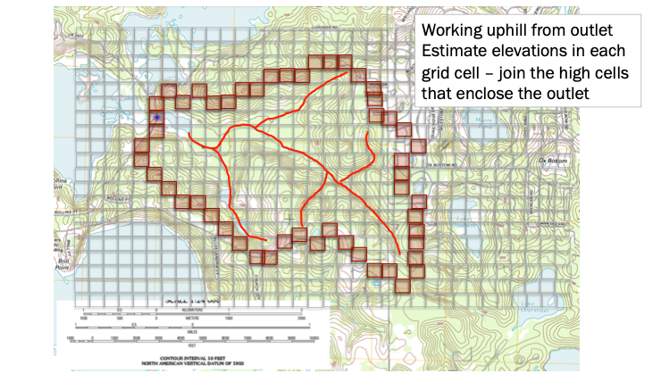

Watersheds¶
Some definitions of a watershed include:
Topographic area that collects and discharges surface streamflow through one outlet or mouth (pour point)
The area on the surface of the Earth that drains to a specific location
In groundwater a similar concept is called a groundwater basin – only the boundaries can move depending on relative rates of recharge and discharge
The topographic definition omits that there could be subsurface sewer systems that can cross topographic boundaries.
It’s a big deal in urban areas.
Consider the artist rendering of a watershed

Large watersheds are comprised of smaller interconnected watersheds.
Example Delineation¶

Step 2. Superimpose a Grid¶
While not strictly necessary its helpful. The grid serves two purposes, first a reference system and as a raster representation of the watershed (albeit at a coarse resolution)

Step 3. Cell Elevations¶
Use the grid to estimate average elevations in a grid cell, you use this information to help locate the boundary. Water flows from high to low elevation. Starting from the outlet work uphill until have high point, if its downhill as you cntinue in one direction beyond the point, its possibly the boundary (you are identifying “ridgeline” features).
Simultaneously identify internal water flow paths, these help identify the ridgeline features.

Step 3. Draw/Refine Boundary Estimates¶
Using the grid to estimate average elevations in a grid cell, you locate the coarse resolution boundary. Water flows from high to low elevation. Using the internal water flow paths, move upgradient along these paths to refine the boundary delineation.

Watershed Metrics¶
Now that the watershed is identified and demarked we can measure a few commonly used and important physical properties. These measurements are used are to characterize the fundamental unit in surface water hydrology which is the watershed.
A watershed is defined as the area on the surface of the earth that drains to a specific location.
A minimal description of watershed properties must include:
Area
Main channel length
Slope (requires the specification of path), The MCS is usually reported as is the average slope (highest point on the boundary to the pour point). The transverse slope is often reported too.
Soil permeability
%-impervious (developed)
Measuring Area¶
If the grid cells used in delineation are all squares, one can count the squares contained in the watershed, multiply by the per-cell area and have a good estimate of the watershed area.
Or one can represent the outline as a polygon, and obtain the coordinates of each vertex and use numerical integration (like you learned in surveying) to estimate the plane area.
Or capture an image for the map with the boundary, and import it into a graphics program and use the measuring tools (Acrobat Pro, AutoCAD, Engauge, ArcGIS, QGIS, …. )
Measuring Length(s)¶
Similar to area, you can count cells along a path and multiply the count by the length of a cell side, or the cell diagonal (depends on how many diagonal moves you need to make) to obtain a length. Or use software (Acrobat Pro, AutoCAD, Engauge, ArcGIS, QGIS, …. ) to make the measurements.
Estimating Slope(s)¶
Slope estimates require two components
A path with a length (\(S\))
The change in elevation along the path (\(\Delta z\))
The dimensionless slope is simply the ratio of the two \(\frac{\Delta z}{S}\). Percent slope is the dimensionless slope multiplied by 100. Sometimes slope is expressed in units of \(\frac{ft}{mi}\) or \(\frac{m}{km}\), while meaningful these will have to be converted into dimensionless or %-slope for most hydrologic computations.
Estimating Soil Properties¶
Subjective when using paper maps, but reasonable values can be inferred from soil maps - either paper-based or electronic Web Soil Survey

Estimating %-Impervious¶
This is subjective, but one reasonable approach is using Google Earth
Find the area of interest
Select a viewing height (needs to be same for all areas if you are going to have to scroll)
Put a grid on the screen (physical grid on see‐thru plastic, or use a china marker and draw on the screen)
Count concrete vs not concrete – relative ratio is a useable estimate of the % impervious
Note
This would be a good task to hand off to a machine learner model. Take the area of interest, capture an image, have the ML model count pixels that are NOT CONCRETE (brown, green, …..)
USGS StreamStats¶
In many states one could also use an on-line tool called StreamStats
For example a culvert on Snake Creek in Oklahoma can be examined and will produce the delineation below

In class we will explore this tool a little bit, however it does not have Texas loaded into its database yet,
References¶
Florida Delineation Training Watershed (png) Right-Click “Save As…”
Texas Delineation Training Watershed (png) Right-Click “Save As…”
{kind=link}
{kind=link}